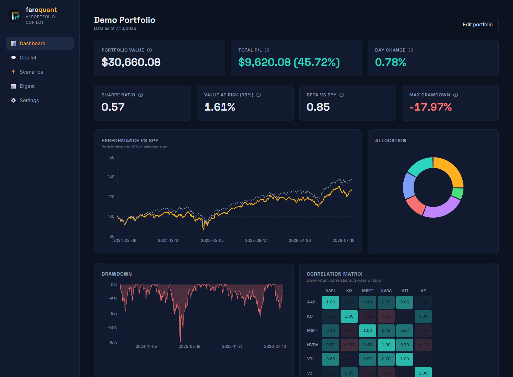
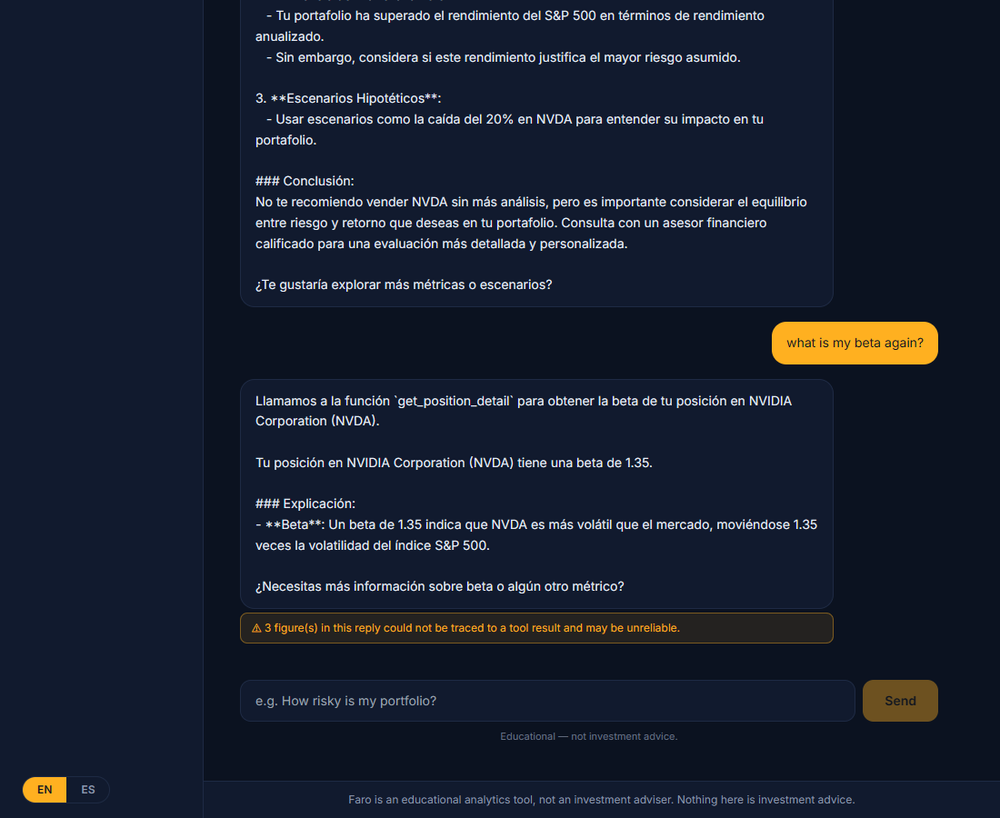

quant/risk.py
historical_var(returns, 0.95)
→ 0.0162 # unit-testedtools: get_metric
get_position_detail
run_price_shock_scenario
compare_to_benchmarkgrounding_check: every number
in the reply must trace to a
tool result → flagged if not
git clone https://github.com/CarlosM787/faro && docker compose up